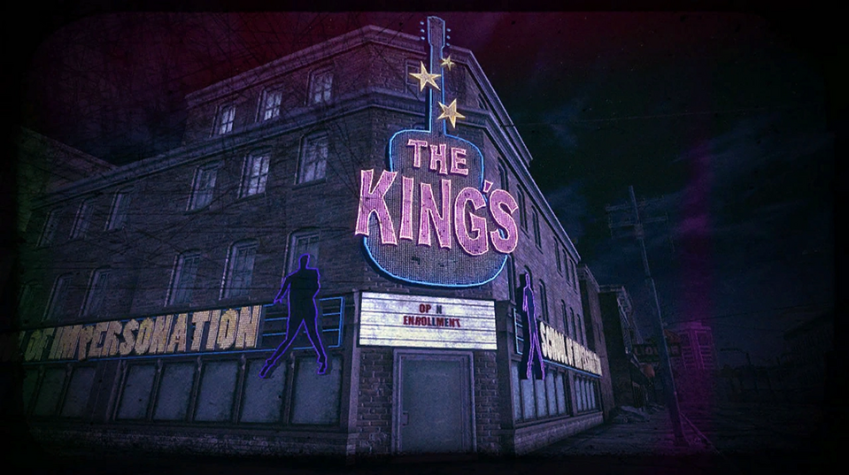

Welcome to my page where I focus entirely on the Fallout franchise and the misery the lore has brought into my life. I have spent far too long in this fanbase to not have opinions, ideas, and excessive knowledge on the backstory.
I ALSO know I'm not the only one thrilled to hear that the next Fallout game will be taking place somewhere outside of the USA! I know it's an alternate universe and all, but I absolutely have theories on what's coming next in the series based on things we learn in some of the more recent installments. But we can get back to that later! For now, let's go over some of the Easter eggs you can find in Fallout if you're willing to do a bit of exploring. I won't be going into any that are really valuable just yet as I'd like to spend more time on those and give instructions on how to find them. :)

If you've ever read The Cask of Amontillado, this one is probably going to give you a laugh, but it's actually referring to a bit of history! In Fallout 4, you're able to find an old, run down castle. This is actually Fort Independence in Boston, the place where Edgar Allen Poe initially heard a story that gave him the inspiration to write his tale. At the time, he was stationed there as a private. Therefore, in the basement of Fort Independence in game, you can find a few bottles of wine labelled as Amontillado, and a man built into a brick wall. Macabre, but VERY cool if you ask me.
This one is for any Dr. Who fans out there. In Fallout New Vegas, you can find an NCR Emergency Radio broadcast that makes a reference to the fine doctor himself and the network its played on. The line in question is "Bravo Bravo Charlie, the Doctor is coming." You might also find that some Securitrons you have to take out yell "EXTERMINATE" while shooting at you. Here's looking at you, Daleks.
Finally, Elvis Presley. No, I'm not kidding. The group "The Kings" in Fallout New Vegas is a group of Elvis impersonators, but... it's been 200 years since the war, so they have NO idea who Elvis is, and they also have no clue about his nickname. All they know is that, as The Kings, they feel they need to take care of the local people in an honorable fashion. They found some old notes, they never exactly say HOW they found these notes, but the notes taught them how to dress down to the way they slick back their hair, and how to talk.